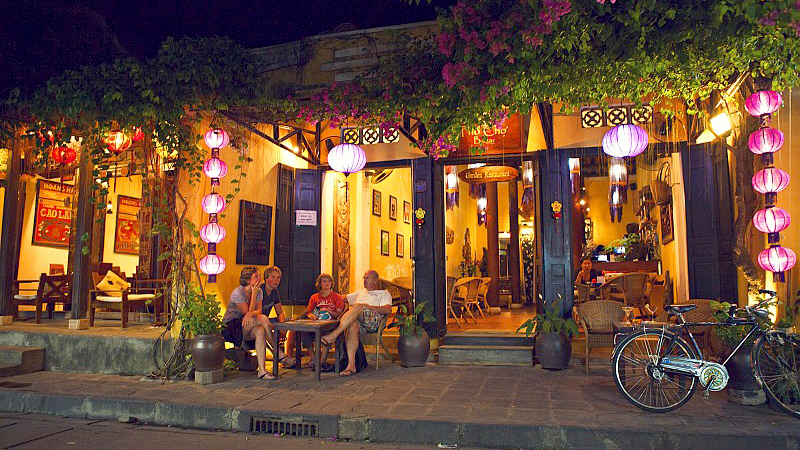
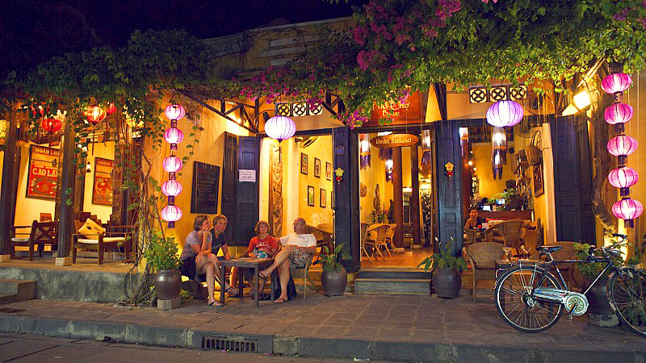
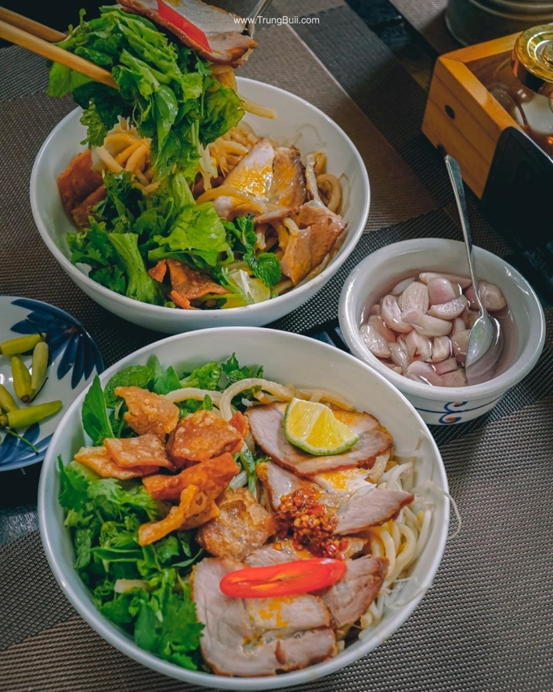
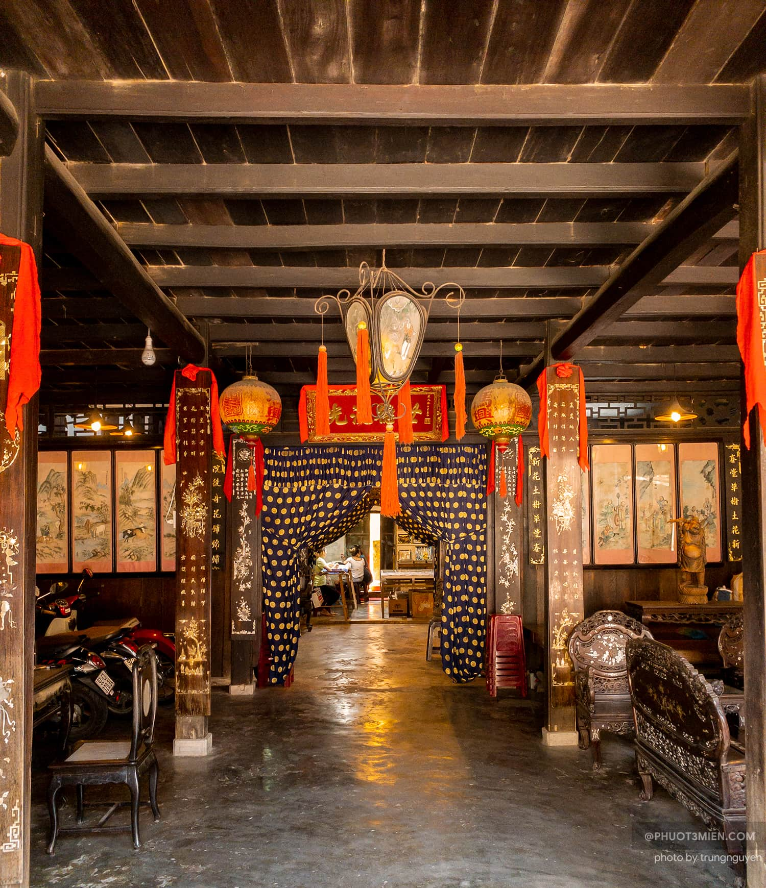
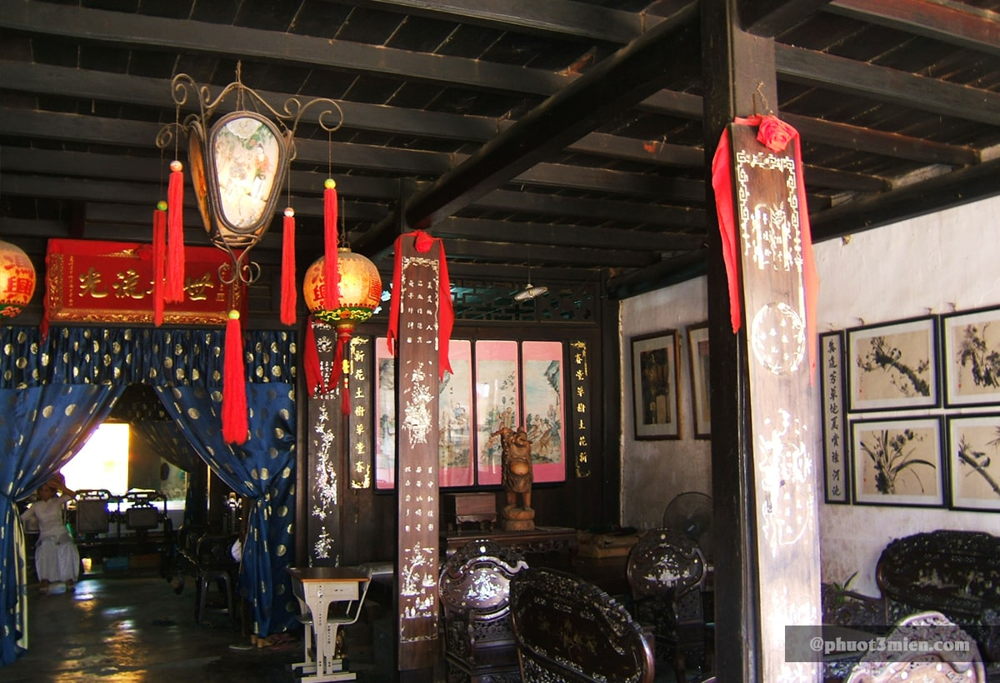
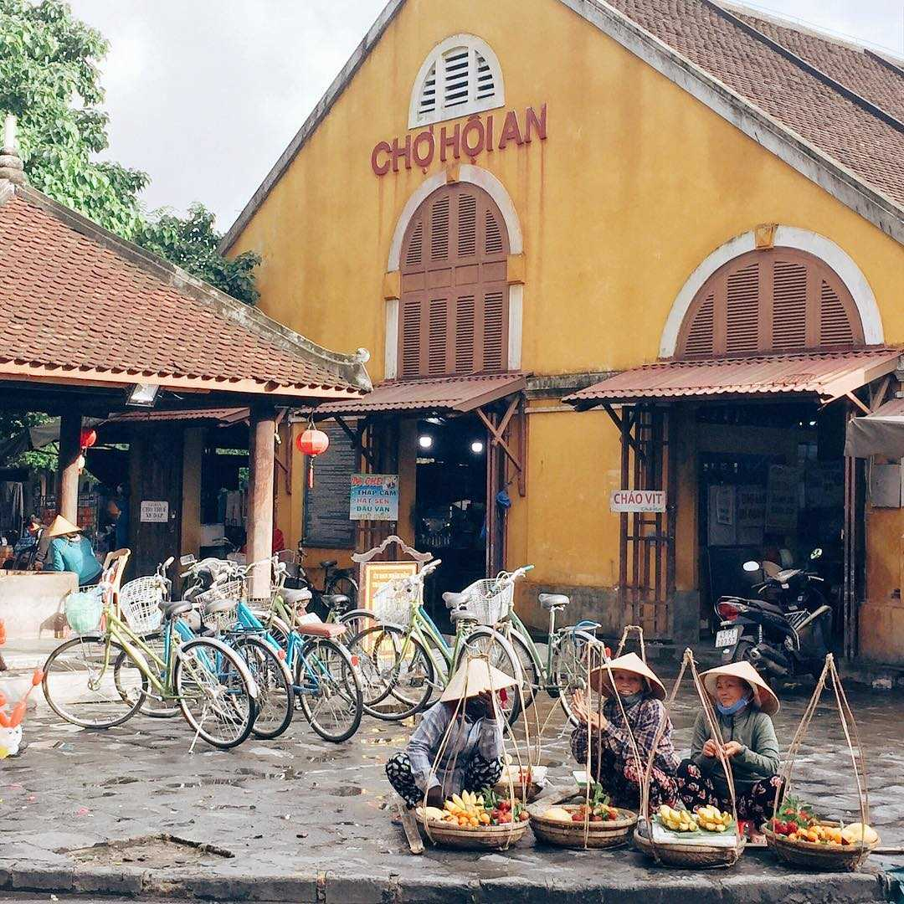
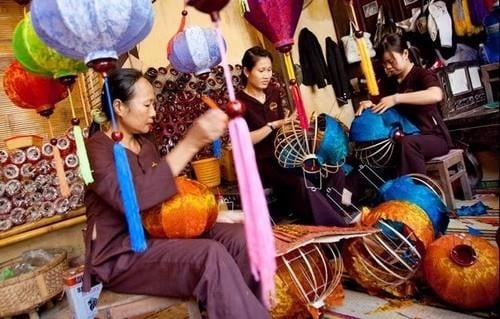

Giới Thiệu
Hội An là một thành phố trực thuộc tỉnh Quảng Nam, Việt Nam. Phố cổ Hội An từng là một thương cảng quốc tế sầm uất, gồm những di sản kiến trúc đã có từ hàng trăm năm trước, được UNESCO công nhận là di sản văn hóa thế giới từ năm 1999(cre: Wiki)
 

Trường nằm khá xa trung tâm. Khi sinh viên theo học ở đây, để tiện cho việc di chuyển thì đa số sinh viên đều chọn ở ký túc xá hoặc ở các khu trọ gần trường. Điểm cộng cho trường là không gian với lối kiến trúc độc đáo, khuôn cảnh yên bình và xanh mát. Các tòa giảng đường và ký túc được bố trí xen kẽ với hệ thống hồ điều hòa, sân tập thể thao, vườn hoa… tạo nên một không gian xanh.
Ẩm thực
1. Cao lầu Hội An
Không quá lời nếu bảo rằng nếu chưa ăn cao lầu thì xem như chưa từng đến Hội An. Sợi mì cao lầu có màu vàng sáng, do bột được trộn cùng với tro củi tràm tạo nên hương vị đặc biệt. Cao lầu thường được ăn chung với tôm, thịt heo, xá xíu, rau sống…. Nước dùng ít nhưng đậm vị, tạo nên “linh hồn” cho món ăn được xem là tiêu biểu cho nét đẹp xưa cũ của phố cổ.(klook.com)
Một số tiệm cao lầu ngon ở Hội An khác mà bạn nên cân nhắc là:
- • Cao lầu Thanh: 26, Thái Phiên, Hội An
- • Cao lầu Hồng: 18, Thái Phiên, Hội An
2. Hoành Thánh
Dù là món ngon có nguồn gốc từ Trung Quốc, hoành thánh Hội An vẫn sở hữu hương vị rất thuần Việt. Vỏ hoành thánh vàng ươm, mềm dai ôm lấy phần nhân tôm thịt đầy đặn rồi ăn kèm với gan heo, hẹ, trứng lòng đào…. Nếu không thích món nước thì bạn có thể chọn hoành thánh chiên giòn, chấm thêm chút tương ớt cũng “rất gì và này nọ” đấy. (klook.com)

Chỗ bán hoành thánh ngon ở Hội An:
- • Anh Dũng: 14, Bà Triệu, Hội An
- • Thanh Thanh, 152, Trần Phú, Hội An
- • Vạn Lộc: 27, Trần Phú, Hội An
Lịch sử
Hội An ra đời vào khoảng nửa cuối thế kỷ XVI, thời nhà Lê. Lịch Sử Hình Thành Và Phát Triển Của Phố Cổ Hội An từ năm 1527, Mạc Đăng Dung giành ngôi nhà Lê, vùng Đông Kinh thuộc quyền cai quản của nhà Mạc. Năm 1533, Nguyễn Kim nhân danh nhà Lê tập hợp binh sĩ chống lại nhà Mạc. Sau khi Nguyễn Kim chết năm 1545, người con rể Trịnh Kiểm nắm giữ quyền hành, dòng họ Nguyễn Kim bị lấn át. Năm 1558, người con thứ của Nguyễn Kim là Nguyễn Hoàng cùng gia quyến và một số binh lính lui về cố thủ ở vùng Thuận Hóa và từ sau năm 1570, Nguyễn Hoàng tiếp tục nắm quyền trấn thủ Quảng Nam. Cùng với con trai là Nguyễn Phúc Nguyên, Nguyễn Hoàng xây dựng thành lũy, ra sức phát triển kinh tế Đàng Trong, mở rộng giao thương buôn bán với nước ngoài và Hội An trở thành thương cảng quốc tế sầm uất bậc nhất khu vực Đông Nam Á thời kỳ đó. (https://sachphapluat.net)
Các địa điểm du lịch, văn hóa
Nhà cổ Phùng Hưng
- • Địa chỉ: Số 4, đường Nguyễn Thị Minh Khai, tp Hội an, Quảng Nam

Nhà cổ Phùng Hưng có tuổi đời hơn 100 năm, được xây dựng từ thế kỷ XIX. Chủ nhân của ngôi nhà từng là một thương gia nổi tiếng và giàu có, với mong muốn gia đình luôn hưng thịnh làm ăn phát đạt nên ông đã lấy tên là “Phùng Hưng”. Với kết cầu đặc biệt, phần gác được làm bằng nhiều thanh gỗ cao, nhà được bao quanh bằng các hành lang rộng thể hiện rõ phong cách Á Đông đặc trưng của ngôi nhà. Mang đậm kiến trúc của 3 nền văn hóa: Nhật – Trung – Việt.(cre: VNtrip.vn)
Ngôi nhà đã trải qua 8 thế hệ nhưng vẫn được giữ gìn và bảo quản rất tốt.
Ngôi nhà mang đậm dấu ăn văn hóa lịch sử về lối sống của các thương nhân phố Hội. Đây từng là nơi giao thương trao đổi, mua bán nhiều mặt hàng như: tơ tằm, muối , tiêu…
Mỗi phòng học được trang bị đầy đủ thiết bị như quạt máy, điều hòa, hệ thống đèn LED âm trần, máy chiếu, TV, loa, ổ cắm điện cho laptop. Trường còn có thêm các phòng lab để dạy và học các môn lập trình chuyên sâu. Sinh viên ngành thiết kế đồ họa cũng có phòng chức năng riêng với đầy đủ thiết bị như giá vẽ, bảng vẽ, phông, máy chụp ảnh và hệ thống đèn chiếu sáng chuyên nghiệp.
Chợ Hội An
Chợ Hội An là một trong các khu du lịch ở Hội An thu hút nhiều du khách đến thăm quan và mua sắm. Bạn có thể tìm thấy nhiều những đặc sản đặc trưng, các đồ thủ công mĩ nghệ cũng như được thưởng thức nhiều món ăn cực kì ngon miệng hấp dẫn tại đây. Đến với chợ Hội An, bạn cũng được giao lưu, trò chuyện với người dân địa phương và có thêm nhiều trải nghiệm về cuộc sống hàng ngày của người dân nơi đây.(cre: vntrip.vn)

Xưởng thủ công mỹ nghệ Hội An
Xưởng sản xuất thủ công mỹ nghệ Hội An nằm ngay trên đường Nguyễn Thái Học và được lập ra với mục đích bảo tồn, duy trì những ngành nghề thủ công truyền thống từ bao lâu nay của người dân nơi đây.

Du khách ghé thăm địa điểm du lịch tại Hội An xưởng thủ công mỹ nghệ Hội An, không những được chiêm ngưỡng, tham quan, ngắm các sản phẩm đẹp, tinh tế, mà còn được quan sát cách mà những người thợ lành nghề tỉ mỉ trong công việc để làm nên một sản phẩm, và du khách còn có dịp tham gia vào một số công đoạn sản xuất, tự tay mình làm để có những trải nghiệm thực tế và thú vị về công việc ở xưởng.

Khách sạn và homestay
1. Acacia Heritage Hotel 3 sao Khách sạn ở Cẩm Nam, Hội An
Acacia Heritage Hotel tọa lạc tại thành phố Hội An, chỉ cách Phố Cổ Hội An 5 phút đi bộ. Với tầm nhìn ra quang cảnh Sông Thu Bồn, khách sạn có hồ bơi ngoài trời và trung tâm thể dục. Bữa sáng rất ngon miệng . Chỉ với 382.000 VNĐ một đêm

2. Hoai River Hoi An Homestay
- 15/6 Thoai Ngoc Hau, Cam Pho, Hoi An, Vietnam